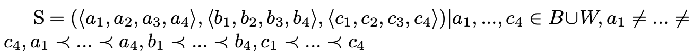
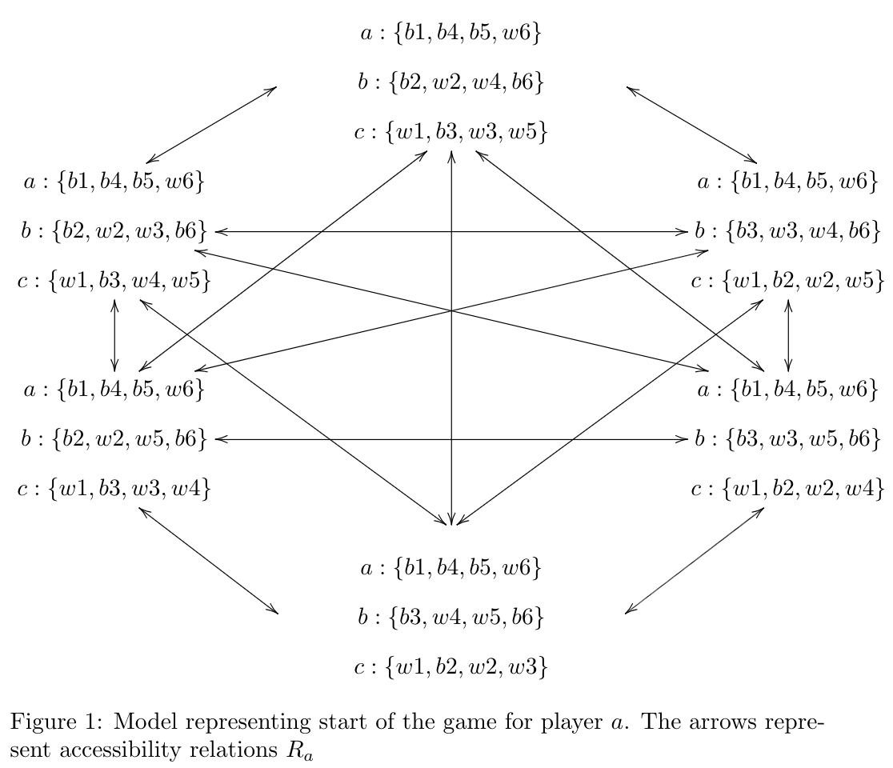
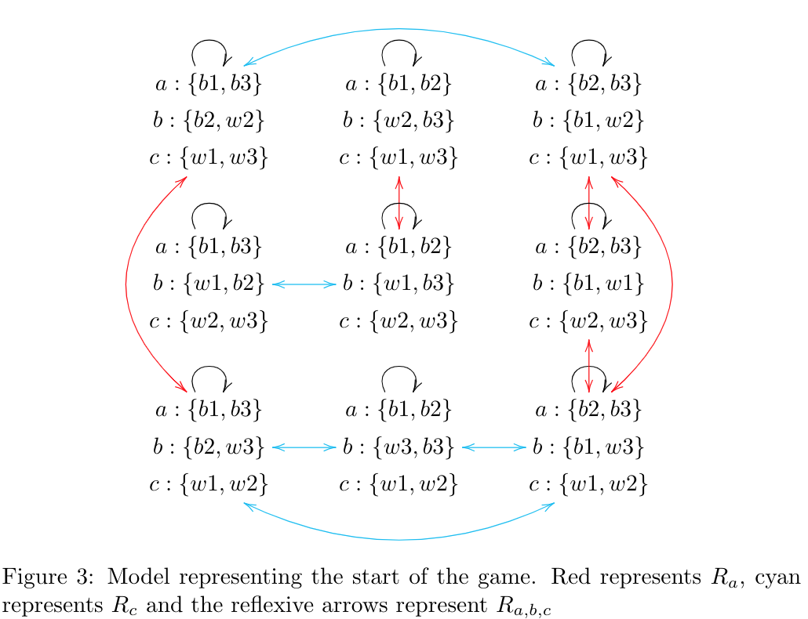
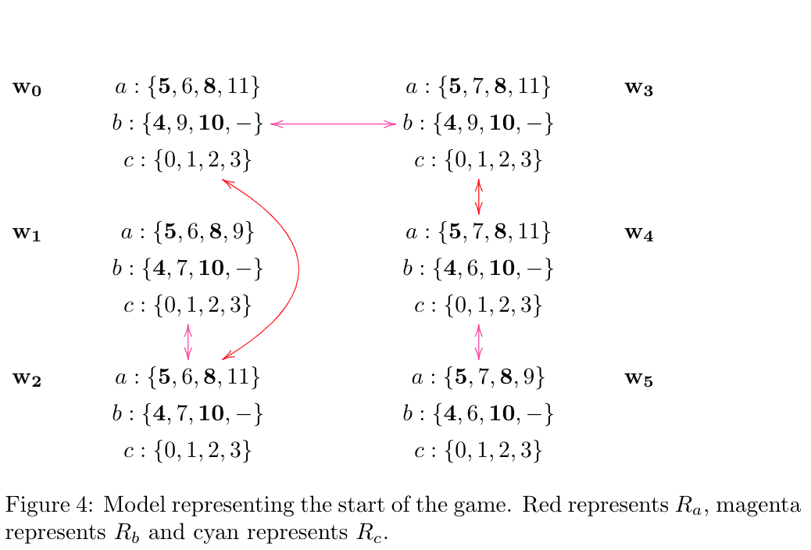
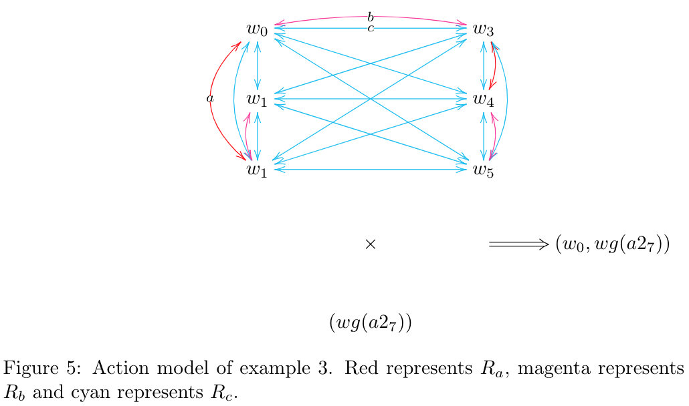

In this project, we will analyse the game ‘Da Vinci Code’. Da Vinci Code is a game in which players each get a secret code and have to guess the code of the other players. However, by guessing something of another player, you can also give information about your own code. Therefore, the players have to think carefully not only about what they know about the other players’ codes, but also about what they know about what the other players know about their codes, and about what the other players know about what they know about the other players’ codes, and that is where epistemic logic comes in.
The game consists of twelve black and twelve white blocks each with a number from 0 to 11 on it (each number occurring once on a black and once on a white block), and one black and one white block with a ‘-’ on it. From the back side, the thirteen white and thirteen black blocks are indistinguishable, it is only visible whether they are black or white.
At the start of the game, each player takes a certain number of blocks (usually four or five, depending on the number of players), and places them on the table such that the player himself can see the numbers but the other players cannot. These blocks form this player’s code. The blocks have to be put in ascending order according to the numbers on them, where the ‘-’ can be placed at any place, and in case of equal numbers the black blocks come before the white blocks. Then in each turn the player whose turn it is takes one block from stack, looks what it is and then can guess one block of one other player’s code, e.g. “Is this white block a 1?". The other player must answer truthfully. If the guess was incorrect, the other player says “no” (he doesn’t have to tell what was the actual number on the block), and the player on turn has to reveal the block that he has just taken from the stack and put it at the correct place open in his code. His turn is then over and the next player may take a block from stack and guess a block from another player. If the guess was correct, the other player has to reveal the concerning block and lay it open at the correct place in his code (i.e. the place where it was already standing). The player on turn may - if he wants - guess another block of a player (which can be the same player or another), the same procedure repeats until a wrong guess is made, which ends the turn. He can also choose to not make another guess and add the block he drew to his code in the correct place.
When the total code of a player is revealed, he is out and cannot guess the codes of the other players anymore. The game ends when the codes of all but one players are revealed, the remaining player is the winner.
We will give an example to show where higher order knowledge might be needed in the game. Suppose that in a certain state of the game player a has the code [5,6,8,11], and player b has the code [4,9,10,-], all in black blocks (to make it an easy example). From player a, the 5 and the 8 are revealed and from player b, the 4, the 10 and the ‘-’ are revealed, so the visible codes are [5,?,8,?] for player a and [4,?,10,-] for player b. It is b’s turn. Player b can guess the hidden block of player a between the 5 and the 8, he has 50 % chance of guessing correct because it can be either a 6 or a 7. However, if player b does guess this block and guesses it wrong, all players know that he didn’t know whether it was a 6 or 7, so they all know that player b does not have the 6 or the 7 himself (for if he would have one of them, he would know the number on the block of player a). Then they can deduce that the hidden block of player b himself must be a 9, because except for 6 and 7 the only numbers between 4 and 10 are 5 and 8, which already lay open in player a’s code. Hence, if player b guesses that the hidden block of player a is a 7, he has by doing so given away his own code and can in the next turn of any player be out.
Let A be the set of players, with |A| = m and N the number of blocks each player has at the beginning of the game. We will use the system S5(m) to form a Kripke model of a simplified version of the game. In this simplified version, there are only 12 blocks, namely the blocks 1-6 of both colors, there are 3 players, so m = 3 and each player has 4 blocks so N = 4. We use this simplified version in order to need only a small representation, but it can easily be extended to a model with a different number of players, a different number of blocks, or a different number of blocks per person. We assume that players do not ask for numbers that are in their own code or of which they for some other reason know that cannot be correct (i.e. they will only make guesses that can be true). A Kripke model M is defined as M = (S, π, R1, ..., Rm) with
S a non-empty set of states,
π : S → (P → {t, f}) a truth assignment for each propositional atom in each state,
Ri ⊆ S × S (i = 1, ..., m) a set of accessibility relations.
Let us denote the white blocks as W = {w1, ..., w6}, the black blocks as B = {b1, ..., b6}, and the agents as A = {a, b, c}.
We can formalise the game as a Kripke model M = (S, π, Ra, Rb, Rc). We will start by creating a model of the beginning of the game. The states are defined as:
 where x1, ..., x4 represent the four blocks of player x and p ≺ q is defined as ‘the number on p is lower than the number on q or (the numbers on p and q are equal and p is black and q is white)’.
If the players had no information at all about who had which blocks, there would be an accessibility relation between each pair of states:
Rx = {(s, t) ∈ S × S}
However, the players do have some information and hence we can add some restrictions on the accessibility relations. Since each player knows his own blocks but not those of the other players, the accessibility relations Rx of player x are restricted to pairs of states for which their own blocks are the same:
Rx = {(s, t) ∈ S × S|⟨x1s, ...x4s⟩ = ⟨x1t, ..., x4t⟩}
, where xis represents the ith block of player x in state s.
Furthermore, each player can see the colour of the blocks of the other player, so in all accessible states the colour of all blocks are the same as in the current state:
Rx = {(s, t) ∈ S × S|⟨x1s, ...x4s⟩ = ⟨x1t, ..., x4t⟩}, yis ∈ W ⇔ yit ∈ W for all y ∈ A
When it is player a’s turn, he will guess a block of another player. There are two possibilities, either he can guess right or guess wrong. When he guesses right, the block is revealed to everyone, so the value of that block becomes common knowledge (every player can see the value, and every player knows that every player can see the value, and every player knows that every player knows that every player can see the value, etc.). In the accessibility relations Ri of all agents, the relations to states with a different value for that block will be removed. If he guesses wrong, everyone knows that that block does not have that value, so the relations to states with that value will be removed from every player’s accessibility relations.
Because we assumed that players only make guesses that can be true, the guess can also give the other players some information about the player in turn. All states in which the current player has a block with the number and colour of his guess will be removed from the accessibility relations of the other player, and possibly other deductions can be made.
In this section we will illustrate the model defined above by an example. Assume that player a has the blocks [b1, b4, b5, w6], player b has [b2, w2, w4, b6], and player c has [w1, b3, w3, w5]. Because the number of possible states is quite large, we only look from the point of view of player a. Player a only sees his own blocks and the colour of the blocks of the other players. He can deduce right from the start that the white 1 should be the first block of player c (because if it would be at a different position, there would be another block in front of it, which could only be the black 1 due to the ordering of the numbers, but he has the black 1 himself). In the same way, he can deduce that the black 6 is the last block of player b, because the only number that can follow the black 6 is the white 6, which he has himself. Therefore, considering the ordering of the blocks, there are only six possible states from the point of view of player a. The model with the possible states and accessibility relations for player a is shown in figure 1. The real state is the state at the top. Reflexive arrows have been left out of the picture, but are there for every state.
Now suppose that player b starts and asks whether the third block of player c is a 3. Player c has to answer truthfully that this is indeed the case. Now, all models without a 3 on this place can be removed. The resulting model is shown in figure 2.
Not all actions of other players give information to all other players. Suppose that now it is player c’s turn, and he asks whether the first block of player b is a 2. Player b will answer affirmatively, but for player a, this is of no interest because he already knew that this block was a 2. After this turn, for player a the model is still as shown in figure 2.
Now when it is player a’s turn, he only has to discriminate between the two states shown in figure 2, so by for example asking whether the last block of player c is a 5, he will be able to deduce which of the two states is the real state.
In order to show a model with accessibility relations for all agents, we take an even more simplified example. Suppose that only the numbers 1, 2, and 3 are in the game for both colours, so every player has only 2 blocks. Suppose that player a has two black blocks, player b has one white and one black block, and player c has two white blocks. This is common knowledge, because everyone can see the colour of the blocks of every player, and knows that the others can see this as well, and knows that the others know that everyone knows, et cetera. Now the Kripke model representing the start of the game is as shown in figure 3. The accessibility relations for player a, b, and c are shown in red, magenta, and cyan respectively. As can be seen in the model, player b only has reflexive accessibility relations, because there are no two states in which the blocks of player b are the same. This shows that player b immediately knows everything. On the other hand, for players a and c, there are some states that are indistinguishable from each other.
(Example from introduction) In this third example, we will show the way higher order knowledge can play a role in the game. Suppose that only all black blocks are in the game, and they are divided such that player a has [5,6,8,11], player b has [4,9,10,-], and player c has [0,1,2,3]. The 7 is not yet in the game. The 5, 8, 4, 10 and - are revealed already. We look from the perspective of player c. For him, there are six possible states. In figure 4 the Kripke model from the perspective of player c is shown. The accessibility relations for agent c have not been drawn, but are there between every pair of worlds. Also, the reflexive relations are left out, but are there for every world for every agent. The bold numbers denote the numbers that are revealed and therefore are common knowledge among all agents. Now suppose it is the turn of agent b. He cannot discriminate between the real state (the top left state), and the top right state where agent a has a 7 instead of a 6. Therefore, he asks player a whether his second block is a 7, to which player a must give a negative answer. To player c, this gives different types of information. Suppose that a7 is the proposition referring to the fact that the second block of player a is a 7. Of course, now player c knows that a does not have the 7: Kc¬a7. But also he knows that player b did not know: Kc¬Kb¬a7. He can therefore cancel out the worlds in which this is not true from his possible worlds. (M, w3) ⊨ a7, (M, w4) ⊨ a7, and (M, w5) ⊨ a7, and (M, w1) ⊨ Kb¬a7 (in all worlds s with (w1, s) ∈ Rb, (M, s) ⊨ ¬a7: these worlds are exactly w1 and w2), and in the same way (M, w2) ⊨ Kb¬a7. Hence, the only remaining world for c is w0.
We can also describe the situation as an action model. The only ‘real’ action that can be taken in the game is the action of asking a block from another player, but we discriminate between a right guess and a wrong guess. Because every action that is taken and every answer are public, the relations in the action model are equal for all agents. The precondition for the action ‘wrong guess’ (wg) is that the guessed number is not on that block and that the person who asks does not know this, while the precondition for the action ‘right guess’ (rg) is just that the guessed number is indeed there. When someone makes a right guess, we do not know whether he knew the value of that block or he did not know and just made a lucky guess. Let us denote the proposition that block xi (i.e. the ith block of player x) has number p as ‘xip’. We can then define an action model for the game as a structure ⟨E, ∼,pre⟩ with
E = {rg(xip), wg(xip)|x ∈ A, i ∈ N, p ∈ W ∪ B}
∼ = {(e, e)|e ∈ E}
pre(rg(xip)) = xip,
pre(wg(xi_p))=¬xip ∧ ¬Ka¬xip with a the agent that performs the action
When we combine the model from Example 3 with the action of agent b guessing that the second block of a is a 7, we get the action model shown in figure 5.
To supplement our research and visualise the theory of mind of different agents, we built a simulation of a simple scenario where agents play against each other and model their knowledge states. This simulation features both a Graphical User Interface (GUI) and a command line interface. In the GUI it is possible to let several logical agents play against each other and observe the moves they make based on their respective strategies. We also included a mode where you can join the logical players and try out their reactions to guesses you make. The command line interface can be used to simulate series of games for comparing the strategies with different game settings. Furthermore both the GUI and commandline versions of the simulation have the possibility of setting the total amount of players, their strategies (for the non-human players), the total amount of blocks in the game and with how many blocks every player will start. When using the GUI to view a game it is possible to get insight into the logical beliefs of every agent, in the form of a sort of local Kripke model. This model shows the worlds one agent currently considers possible and relations between them, closely resembling the graph in figure 4.
We also added a view of the complete Kripke model, showing all worlds that at least some agents regard as possible and the relations between these worlds. In all Kripke models in the simulation, the reflexive relations are not drawn, but are there for every agent for every world. In the images below we show some examples of our GUI and the drawing of local and global Kripke models. You can click the images to enlarge them.
In the beginning of the game, the local Kripke model of an agent consists of the worlds that he considers possible, i.e. the worlds in which he himself has the blocks he has in reality, and the other players have blocks that agree with the colours of the blocks they have in reality, as explained in section [initial model]. The global Kripke model at the start of the game consists of the combination of the local Kripke models of all agents.
When some player takes the action rg(xip), i.e. guessing correctly that the ith block of player x is number p, then that block is revealed, so all the worlds where that block has a different value are removed (for all players, because the action is public). When player a takes the action wg(xip), i.e. guessing incorrectly that the ith block of player x is number p, everyone knows that that block does not have number p so all the worlds where the value of the block is p are removed. Furthermore, all players know that player a did not know that that block was not p, so for every player, all relations to worlds in which that player knows that Kaxip are removed. This may be different per player, e.g. player c might know that player a knows something in a certain world, while player b does not know that player a knows this.
For every player, the relations to worlds where player a, according to their knowledge, did not know that xip are removed (the worlds themselves are not removed because they might still be accessible for other players). Hence the relations to worlds s where for all t with (s, t) ∈ Ra, (M, t) ⊨ ¬xip are removed. This is because in such a world where all relations of a are to worlds where xip is not true, player a knows that ¬xip, and hence he would never guess xip.
An example of this is shown in Example 3 (see Figure [fig:model4]), where the relations of c to w1 and w2 are removed because (M, w1) ⊨ Kb¬a27 (in all worlds s with (w1, s) ∈ Rb, (M, s) ⊨ ¬a27: these worlds are exactly w1 and w2), and in the same way (M, w2) ⊨ Kb¬a27.
The game lends itself to some strategic possibilities. Some strategic considerations that players have to make are the following:
When player a guesses another player’s block, all other players will know that player a does not have that block him- or herself.
Always consider other players’ blocks as well. If player b has mainly black blocks and player a mainly white blocks, player a should remember that b has a lot of information about the distribution of black blocks when deciding to reveal player c’s black or white blocks. To maximize the amount of worlds for other players and minimize their own possible worlds,
The more blocks of a certain color are revealed, the easier it becomes to eliminate the ones that are still hidden.
The objective of the earlier stages of the game is to reveal as many blocks as possible, while keeping your own blocks hidden. This gives you an advantage in the last stage of the game, where players have to attempt to close all blocks on the board to win. Keeping your own blocks hidden (so not guessed by another player or revealed by your own queries) gives you a higher percentage of exclusive knowledge on this final set.
When all your blocks have been revealed by other players, you lose the game and are unable to keep guessing.
With this knowledge in mind, we devised two different strategies for the simulated players, basing them on their own knowledge and Kripke models. The defensive strategy is based on not giving away any knowledge and profit from the other players giving away their knowledge. To do this, we compute how many possible worlds remain for other players in case the guess is right, and how many remain if the guess is wrong. We multiply these values by the chance of the guess being right or wrong, and choose the guess that results in the most worlds remaining for the other players.
The aggressive strategy is based on exploring as much as possible to quickly win the game. It tries to minimise the amount of possible worlds for the player. The method for this is the same as for the first strategy, but we compute how many worlds are left for the player and choose the guess that eliminates the largest amount of possibilities.
In this strategy we simulate every possible guess the agent could make and observe the amount of possible worlds that are left after making the possible guess. Afterwards we select the hypothetical guesses that resulted in the lowest amount of possible worlds. To handle the fact that it is not known whether a guess is correct, we have to take a weighted average between the amount of worlds left when the guess is correct and the amount of worlds left when the guess is incorrect.
For every possible guess we take the amount of worlds if the guess is right wr and the amount of worlds if the guess is wrong wf. Then we can define the weighted average as follows:
$$weighted\_average = w_r * \frac{w_r}{w_r + w_f} + w_f * \frac{w_f}{w_r + w_f}$$
All we have to do after calculating this for every possible move is select the move for which this weighted average is lowest, thus the move with the lowest average number of worlds.
For the defensive strategy we simulate all possible moves in a similar fashion. The difference is that now we would like to compare them based on how a move influences the amount of possible worlds of the other agents. This is not a straightforward computation, since the agents don’t have access to the full knowledge of their opponents. What we do have is a set of hypothetical relations for the other agents between worlds we ourselves regard as possible. Every set of worlds that are accessible from each other for an opponent can be a subset of the set of real worlds they see as possible. Therefore we choose the move that maximises the average size of these hypothetical sets of worlds. If we take A to be the set of our opponents and Sa to be the set of all the sets of worlds that are accessible from each other for agent a, we can define the criterion c for selecting the best move for the defensive strategy as follows:
$$c=\frac{\sum_{a\in A}\frac{\sum_{s\in S_a} |s|}{|S_a|}}{|A|}$$
Then we can introduce a similar weighting as was done for the aggressive strategy, with cr being the calculated criterion if the guess was right and cf when the guess was wrong:
$$weighted\_average = c_r * \frac{w_r}{w_r + w_f} + c_f * \frac{w_f}{w_r + w_f}$$
Taking the argmax of this weighted average over all possible moves gives the optimal move.
In order to test the performance of the different strategies, we conduct a small experiment. We have two kinds of logical players: one that tries to get as much information per turn as possible and therefore minimises his own number of possible worlds (aggressive), and one that tries to give as little information as possible to the other players, and therefore tries to maximise the number of possible worlds for the other players (defensive).
We looked at three different scenarios, one with two players both playing according to a different strategy, one with 4 players in which half of the players are aggressive and the other half defensive, and one scenario with 3 players where half of the games feature two defensive players and half two aggressive players.
We altered the total amount of tiles in the game, and the amount of closed tiles on the table (related to the number of tiles in each player’s hand). The total set of tiles is always evenly divided over black and white, and goes from 1 up to half of the total amount, e.g. if the total amount of tiles is 18, the black and white tiles from 1 to 9 are in the game. We looked at the percentage of games that players of a strategy won, over a total of 1000 games. In every game, the starting player was chosen at random.
Table 1
| Amount of tiles | 8 | 10 | 12 | 14 |
| Amount of closed tiles on table | 0 | 2 | 4 | 6 |
| Win rate aggressive strategy | 49.6% | 50.5% | 50.0% | 50.1% |
Table 2
| Amount of tiles | 12 | 14 | 16 | 18 | 20 | 22 | 24 |
| Amount of closed tiles on table | 0 | 2 | 4 | 6 | 8 | 10 | 12 |
| Win rate aggressive strategy | 50.0% | 60.4% | 68.4% | 70.7% | 70.7% | 69.9% | 68.0% |
Table 3
| Amount of tiles | 16 | 18 | 20 | 22 |
| Amount of closed tiles on table | 0 | 2 | 4 | 6 |
| Win rate aggressive strategy | 76.3% | 74.5% | 72.1% | 69.9% |
Table 1 shows the results for two players. We can see that no matter how much uncertainty is involved in the game, the win rate seems to be about 50% for both strategies. The results for the three player game can be seen in table 2. We initially only looked at the games up until 6 closed tiles. For these first results we see that with more uncertainty the aggressive player starts playing better. After retrieving some interesting results for the 4 player experiment we decided to look into some games with even more uncertainty than that. These later games with 8-12 closed tiles seem to indicate a different relation, here the defensive strategy starts winning ground with more uncertainty. The results for four players that can be seen in table 3 show a similar trend: when there are more tiles in the game the defensive strategy start winning more games.
When looking at results for games with two players, the defensive and aggressive strategy seem to perform equally. This is because in a scenario with two players, the defensive strategy basically comes down to the aggressive strategy. This is caused by the fact that when one strategy is unable to distinguish between a set of moves, the agent will use the other strategy to further filter out moves. In the case of two players, the defensive strategy will never score any move higher than another move, since the local Kripke model of the agents can not contain any worlds that are indistinguishable for the opponent (in other words, all sets of accessible worlds for the opponent in our local Kripke are only 1 world large). For the first setup with no closed tiles, this is not super important since the player who can start always immediately wins and therefore the win rate is also about 50%.
The three player scenarios results might be the most interesting of the different setups. In the first setup without any closed tiles, the 50% winrate can be explained by acknowledging that the defensive player is playing an aggressive strategy for the same reasons as mentioned before. After that, all games show the aggressive to be the dominant strategy, but the relative performance of the strategies is influenced a lot by how much uncertainty there is in the game. For the games with 2-6 closed tiles we see the aggressive strategy perform better when there is more uncertainty in the game. This is probably caused by the defensive player using the defensive strategy more and the defensive strategy being inferior for games with little uncertainty. From 8 closed tiles and onwards the trend in the opposite direction can be explained by the defensive strategy getting better when there is more uncertainty. One can imagine that protecting your knowledge is worth more when that knowledge is not easy to figure out from the rest of the game.
Finally in a situation with 4 players, the aggressive strategy is again overall better than the defensive strategy, but decreases in performance when the number of blocks increases. Although it is not entirely clear why this is the case, it might have to do with the fact that in more unsure situations, it is easier for the defensive players to indeed keep their tiles secret, which makes the defensive strategy work better in these scenarios.
In this project, we analysed the game ‘Da Vinci Code’ using formal logic and Kripke semantics. Kripke models can help to understand the mechanisms underlying the game, and to visualise the knowledge of agents in different states of the game. Kripke models can also help agents playing the game making decisions in the game. In the small experiment that we performed, we found out that using Kripke semantics can influence the chance of winning the game for an agent.
There are a few things that could be improved in the current project, or that could be interesting for further research. Because of restrictions on computing power, we simplified the game in our models. We restricted the number of blocks that are used, and we omitted the joker block ‘-’. Also, we kept the number of blocks that a player has stable throughout the game, while in the real game there is the possibility of adding a block to your code every turn. Implementing this facets of the game could be interesting, but especially adding the joker block will increase the complexity of the models because it adds a lot of uncertainty - and hence a lot of possible states - to the game. Adding the joker block could be beneficial for the defensive strategy as it seems to respond well to more uncertainty. Also receiving a new block when guessing correct is probably more beneficial for the defensive player because they tend to guess right more often.
One other drawback to the simulation that we built is that when playing the game yourself in the simulation, the logical players assume that all other players are also perfect logicians and reason in a logical manner. Therefore, when a human player makes irrational guesses, the logical players will get confused, i.e., their Kripke models about what other players know might not be correct anymore. This would happen for example when a human player makes an incorrect guess about a block that he could have known, because in such a case the logical player will assume that the human player could not know this. A way to circumvent this problem is to let the application give a warning when a human player tries to make an irrational guess.
In the experiment we tested games with three players, but didn’t have time to go into the effects of having more or less players of certain strategy. Therefore in future research we would like to see the effect of an aggressive player play against 3 defensive players or the other way around. Having more defensive players in a game would probably be similar to having more unknown tiles in the game, since the players don’t give away information. Therefore in a situation with more defensive players and some closed tiles it could be the case that the defensive strategy outperforms the aggressive strategy. We cannot be sure how the results would be in situations with more aggressive than defensive players, but we expect them not to be much different from situations with an equal division of strategies.